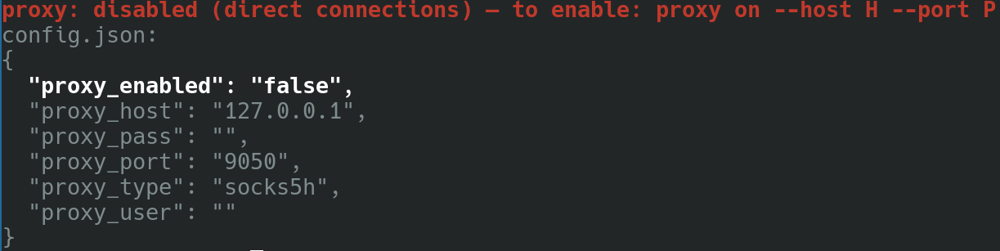

A Matrix chat client and coding agent designed to work in the terminal — C++23, minimal dependencies (POSIX sockets + OpenSSL).
Every page of this site is stamped with the git describe
version, the commit and the build time it was generated from — see the
header. The feature status page carries a
live code anchor per feature (file + line at the recorded commit), so
each claim links straight to the code that backs it.
Feature status at a glance
partially working: 0 · implemented: 0 · awaited: 0 · won't add: 0 — the full table
Proxy configuration
proxy on|off|status manages the Tor/I2P/SOCKS5 proxy for all
network traffic. The status command explains the current state and dumps
the relevant config.json settings, with the deciding line
highlighted:

progressive-cli proxy status — disabled state, config.json belowKeeping the docs honest
The docs are generated from docs/features.json. Two node
scripts (no dependencies) verify that the published page still matches
the code it describes:
node docs/gen.mjs— resolves every feature anchor to a file + line and stamps the version/commit/build intodocs/status.json.node docs/check.mjs --remote <pages-url>/status.json— re-verifies the published page against the commit it was generated from, and reports drift against the working tree.
The CI runs the checker on every push and fails when the page would be
stale. The site is served straight from the docs/ folder
of the main branch (GitHub Pages, branch source) — it contains nothing
but these docs, and deploys nothing else.